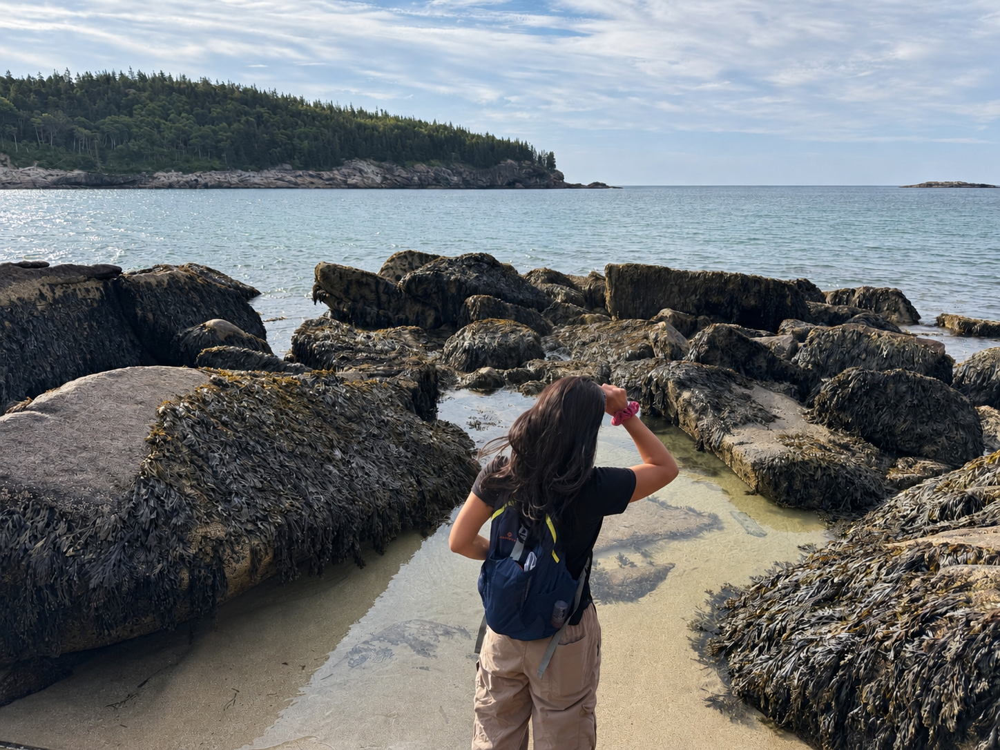

Hi, I’m Laura.
I make maps!
Mostly interested in making complex ideas and data look pretty and understandable. Currently working at a regional planning agency.
I also love to be outdoors whether in a walkable city, in the woods, or under the sea!